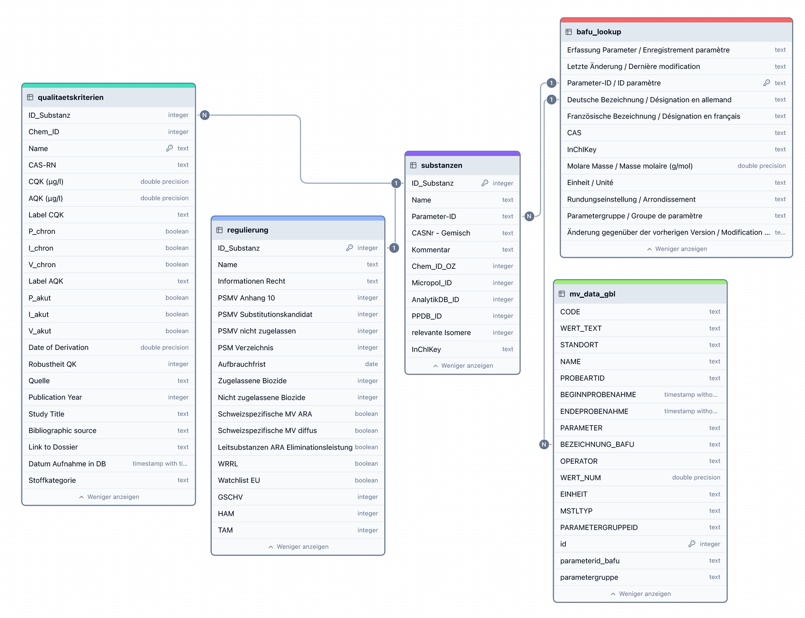

Dateispezifikationen für mvwizr
datei-spezifikationen.RmdEinleitung
Das vorliegende R-Paket mvwizr setzt Eingabedateien (für die
einlesen_*() Funktionen) resp. Dataframes (Funktionen für
Berechnungen und Visualisierungen) mit spezifizierter Struktur voraus.
Im Grundsatz überprüft mvwizr nicht die genaue Struktur einer jeden
Eingabe, sondern prüft das Vorhandensein bestimmter relevanter Elemente
(v.a. Spaltennamen) und führt einige Tests durch um Daten zu validieren.
Im Folgenden werden Eingaben mit den geforderten Strukturen beschrieben.
Beispieldaten sind ebenfalls im Paket enthalten und referenziert.
The Big Picture
Die verschiedenen hier benutzten Tabellen stehen in einer Beziehung zueinander, wobei die Regulierungsdaten und Qualitätskriterien nur über die VSA Substanz_ID zugänglich sind:

Mikroverunreinigungsdaten (Messdaten)
MV-Daten GBL Kt. Bern
Die MV-Daten des GBL Kt. Bern sind kommagetrennte Textdaten, bei denen jede Zeile ein Messwert darstellt. Die folgenden Spalten müssen (mindestens) in den Daten enthalten sein. Dabei sind auch erwartete R-Datentypen und Formate angegeben:
| Variable | Beschreibung | Formatierung |
|---|---|---|
| CODE | Stationscode | character |
| STANDORT | Standort Station | character |
| NAME | Name des Gewässers | character |
| PROBEARTID | Art der Probe: Stichprobe (S), Mischprobe (SaP) oder berechnete Mischprobe (bSaP) | character |
| BEGINNPROBENAHME | Beginn der Probenahme |
datetime (DD/MM/YYYY hh:mm:ss) |
| ENDEPROBENAHME | Bei Mischproben Ende der Probenahme. Bei Stichproben leer. |
datetime (DD/MM/YYYY hh:mm:ss) |
| PARAMETERID_BAFU | BAFU-Schlüssel für Substanz. Wird verwendet um Daten mit der VSA
ID_Substanz zu verknüpfen. |
character |
| BEZEICHNUNG_BAFU | Deutsche Parameter-Bezeichnung des BAFU. Wird von Plotfunktionen verwendet für Beschriftungen. | character |
| OPERATOR | Falls “<”, liegt der Messwert unter der Bestimmungsgrenze und die
Bestimmungsgrenze wird im Feld WERT_NUM angegeben. |
character |
| EINHEIT | Einheit des Messwertes in “ng/l” oder “pg/l” | character |
| WERT_NUM | Messwert oder berechneter Wert | numeric |
| MSTLTYP | Messstellentyp | character |
| PARAMETERGRUPPEID | Parametergruppencode des GBL | integer |
| PARAMETERGRUPPE | Bezeichnung der Parametergruppe des GBL | character |
Beispieldaten finden sich im Paket:
mv_beispiele <- c("Daten_Urtenentxt.txt", "Daten_Balmoosbach.txt", "Daten_Chruemlisbachxt.txt", "Stichproben_Sensetal.txt", "Daten_Balmoosbach_bsp_berechnet.txt")
system.file("extdata", mv_beispiele, package = "mvwizr")Andere MV-Daten
Andere MV-Daten müssen als dataframe/tibble vorliegen, wobei je eine
Zeile eine Messung an einem Standort für eine bestimmte Substanz
darstellt. Dabei müssen mindestens die folgenden Variablen vorhanden
seine (siehe oben und auch auch ?mvdaten_beispiel_mvwizr
für Type jeder Variable):
- UID
- CODE
- STANDORT
- NAME
- PROBEARTID
- BEGINNPROBENAHME
- ENDEPROBENAHME
- PARAMETERID_BAFU
- BEZEICHNUNG_BAFU
- ID_Substanz
- WERT_NUM
Für die Anzeige der Bestimmungsgrenze ist BG_min und BG_max erforderlich.
Regulierungen und Zulassungen
Hierbei handelt es sich um die Tabelle
anf_Substanz_recht_2024.xlsx des VSA, welche Informationen
zum Regulierungs- und Zulassungsstatus verschiedener
Mikroverunreinigungen auflistet (zum Zeitpunkt/Jahr der Erstellung der
Tabelle - in diesem Fall 2024).
Die folgenden Spalten müssen (mindestens) in der Tabelle enthalten sein:
| Variable | Beschreibung | Formatierung |
|---|---|---|
| ID_Substanz | VSA-ID | integer |
| Name | Stoffbezeichnung des VSA | character |
| Informationen Recht | Zeichenkette mit codierten Regulierungsinformationen | character |
| GSCHV | Gibt an, ob und wie die Substanz in der GSCHV reguliert ist. 1 = Spezifischer Wert in Anh. 2; 2 = allgemeiner Grenzwert von 0.1 µg/l | integer |
Legende zu den Informationen Recht:
| ID_Recht | Rechtsordnung | Kürzel | Kommentar |
|---|---|---|---|
| 1 | PSMV Anhang 1 | P | Pflanzenschutzmittel zugelassen im aktuellen Jahr in Verordnung und Verzeichnis |
| 2 | PSMV Anhang 10 | Zu überprüfende Pflanzenschutzmittel | |
| 3 | PSMV Substitutionskandidat | Anhang 1 Abschnitt E - Substitutionskandidaten | |
| 4 | PSMV nicht zugelassen | PX | Pflanzenschutzmittel Wirkstoffe im akutellen Jahr nicht zugelassen weder Verordung noch Verzeichnis |
| 5 | Zugelassene Biozide | B | Biozide mit einem Gesuch zur Zulassung |
| 6 | Biozide non-inclusions | BX | Biozide die nicht zugelassen wurden |
| 7 | Schweizspezifische MV ARA | Liste von C. Götz | |
| 8 | Schweizspezifische MV diffus | Liste aus diffusem Projekt | |
| 9 | Leitsubstanzen ARA Eliminationseistung | ARA | Leitsubstanzen für die Überprüfung der Eliminationsleistung von ARA |
| 10 | WRRL | WRRL | Stoffe is in der Wasserrahmenrichtlinie als Prioritär eingestuft |
| 11 | neue Priortäre Stoffe WRRL | Liste neuer Prioritärer Stoffe der EU (Stand 2015) | |
| 12 | Watchlist EU | WL.EU | Stoff ist auf der Watchlist der EU |
| 14 | GSCHV | GSchV | Anhang 2 GSchV mit subst. spezifischer, ökotox. begründeter num. Anf für anhaltende Belastung in Gew. die nicht TW dienen |
| 15 | Arzneimittel | HA | Human Arzneimittel gemäss Liste der Swissmedic |
| 16 | Tierarzneimittel | TA | Tierarzneimittel gemäss Liste der vetpham |
| 17 | PSM in Verzeichnis aber nicht Verordnung | PX* | Pflanzenschutzmittel zugelassen im aktuellen Jahr nicht in Verordnung aber im Verzeichnis |
| 18 | PSM in Verordnung aber nicht Verzeichnis | PX° | Pflanzenschutzmittel zugelassen im aktuellen Jahr in Verordnung aber kein zugelassenes Produkt im Verzeichnis |
Eine Kopie dieser Tabelle befindet sich im Paket:
system.file("extdata", "anf_Substanz_recht_2024.xlsx", package = "mvwizr")Qualitätskriterien
Hierbei handelt es sich um Qualitätskriterien des VSA zu Mikroverunreinigungen. Die folgenden Spalten müssen (mindestens) in der Tabelle enthalten sein:
| Variable | Beschreibung | Formatierung |
|---|---|---|
| ID_Substanz | VSA-ID | integer |
| CQK (µg/l) | Chronisches Qualitätskriterium | numeric |
| AQK (µg/l) | Akutes Qualitätskriterium | numeric |
| P_chron | Gibt an, ob CQK zu berücksichtigen für Mischtoxizität bei Pflanzen | integer |
| I_chron | Gibt an, ob CQK zu berücksichtigen für Mischtoxizität bei Invertebraten | integer |
| V_chron | Gibt an, ob CQK zu berücksichtigen für Mischtoxizität bei Vertebraten | integer |
| P_akut | Gibt an, ob AQK zu berücksichtigen für Mischtoxizität bei Pflanzen | integer |
| I_akut | Gibt an, ob AQK zu berücksichtigen für Mischtoxizität bei Invertebraten | integer |
| V_akut | Gibt an, ob AQK zu berücksichtigen für Mischtoxizität bei Vertebraten | integer |
| Robustheit QK | Robustheit des QK. Wert 1-3, wobei QK mit einem Wert von 3 nicht verwendet werden | integer |
Eine Kopie dieser Tabelle befindet sich im Paket:
system.file("extdata", "Dat_Qual_kriterien.xlsx", package = "mvwizr")VSA-ID Lookup
Hierbei handelt es sich um eine Tabelle mit deren Hilfe die Parameter-ID des BAFU mit der Substanz_ID des VSA verknüpft werden kann. Die folgenden Spalten müssen (mindestens) in der Tabelle enthalten sein:
| Variable | Beschreibung | Formatierung |
|---|---|---|
| ID_Substanz | VSA-ID | integer |
| Parameter-ID | BAFU Parameter-ID | character |
Eine Kopie dieser Tabelle befindet sich im Paket:
system.file("extdata", "Tab_Substanzen.xlsx", package = "mvwizr")BAFU Datenaustausch Lookup
Hierbei handelt es sich um eine Tabelle des BAFU um Deutsche und Französische Bezeichnungen für die Stoffe mit dem BAFU-Parameter-ID Schlüssel (Bezeichnung ohne Sonderzeichen) abzugleichen. Die folgenden Spalten müssen (mindestens) in der Tabelle enthalten sein:
| Variable | Beschreibung | Formatierung |
|---|---|---|
| Parameter-ID / ID paramètre | BAFU Parameter-ID | character |
| Deutsche Bezeichnung / Désignation en allemand | Deutsche Bezeichnung | character |
| Französische Bezeichnung / Désignation en français | Französische Bezeichnung | character |
Eine Kopie dieser Tabelle befindet sich im Paket:
system.file("extdata", "BAFU_Liste_Parameter_Bezeichnungen_Datenaustausch.xlsx", package = "mvwizr")